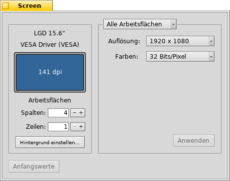

Deutsch
Deutsch Français
Français Italiano
Italiano Русский
Русский Español
Español Svenska
Svenska 日本語
日本語 Українська
Українська 中文 ［中文］
中文 ［中文］ Português
Português Suomi
Suomi Slovenčina
Slovenčina Magyar
Magyar Português (Brazil)
Português (Brazil) English
English Bildschirm
Bildschirm
| Deskbar: | ||
| Ort: | /boot/System/preferences/Bildschirm | |
| Einstellungen: | ~/Konfiguration/settings/system/app_server/workspaces ~/Konfiguration/settings/kernel/drivers/vesa - Nur im VESA Modus. ~/Konfiguration/settings/Screen_data - Speichert die Position des Programmfensters. |
Jede Arbeitsfläche kann ihre eigene Bildschirmauflösung, Farbtiefe und Bildwiederholrate haben.
Im oberen Dropdown Menü kann ausgewählt werden, ob Änderungen nur die derzeitige oder alle Arbeitsflächen betreffen. In den anderen beiden Dropdown Menüs können, abhängig von der Grafikkarte, alle unterstützten Bildschirmauflösungen, Farbtiefen und Bildwiederholraten gewählt werden.
Nach einem Klick auf werden die Änderungen sofort übernommen, und es erscheint eine Alarmmeldung, ob die Einstellungen behalten werden oder rückgängig gemacht werden sollen. Falls nach 12 Sekunden keine Antwort erfolgt ist, werden alle Änderungen auf den vorherigen Stand zurückgesetzt. Hilfreich, falls der Monitor die gewählten Einstellungen nicht unterstützt, und die Alarmmeldung nicht sichtbar ist.
Auf der linken Seite sind Hersteller und Modellbezeichnung sowie Auflösung in dpi (dots per inch) des angeschlossenen Bildschirms aufgeführt. Beim Berühren mit dem Mauszeiger wird der Name der Grafikkarte als Tooltip angezeigt, falls diese von einem Treiber unterstützt wird. Ansonsten wird auf "VESA" zurückgegriffen, eine Lösung, die mit fast jeder Hardware funktioniert.
setzt alle Einstellungen auf die Werte zurück, die beim Starten der Bildschirmeinstellungen aktiv waren.
Links unten kann die Anzahl der Arbeitsflächen ausgewählt und diese in Spalten und Zeilen eingeteilt, sowie die EInstellungen für Hintergründe geöffnet werden.